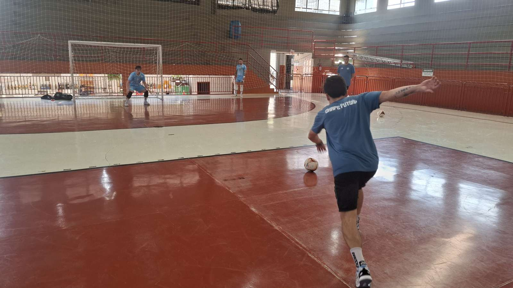
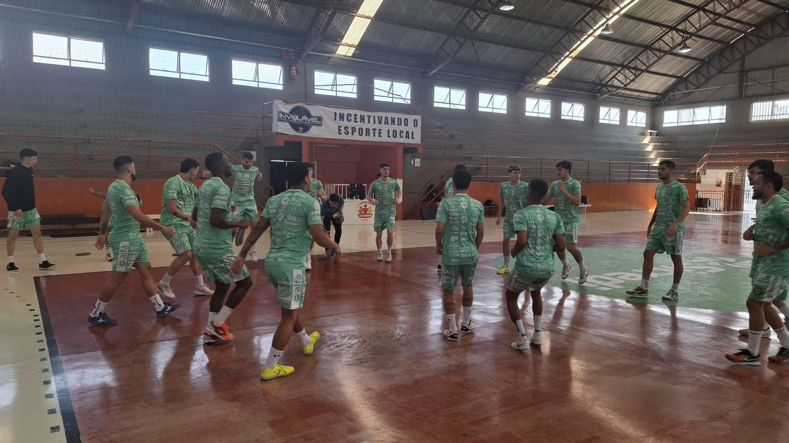
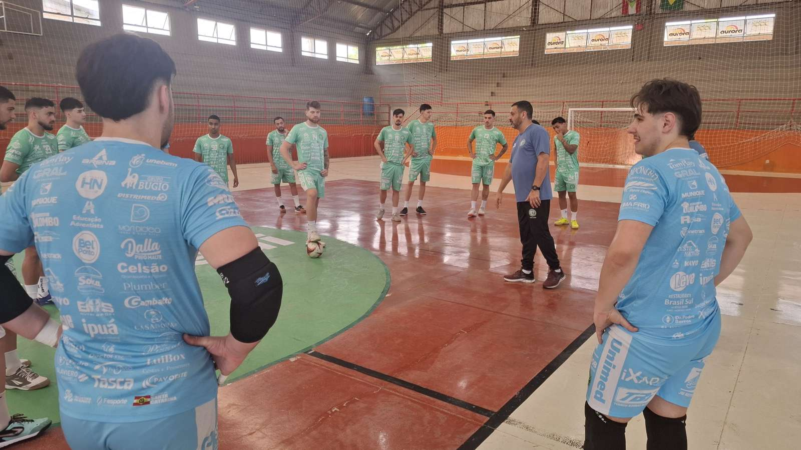

A Prefeitura de Chapecó/Chapecoense/Unochapecó pode voltar à final da Copa Santa Catarina de Futsal depois de 14 anos. Nesta sexta-feira (13), às 20h, o Verdão das Quadras recebe o Criciúma no Ginásio Plínio Arlindo De Nes (SER Aurora), em Chapecó, pela partida decisiva da semifinal.
Após o empate por 2 a 2 no jogo de ida, em Criciúma, quem vencer garante a classificação. Nova igualdade leva à prorrogação e, persistindo o empate, aos pênaltis. O classificado enfrentará Pouso Redondo ou Marcílio Dias na decisão. O campeão assegura vaga na Copa do Brasil de 2027.

A Chape Futsal tenta repetir o feito de 2012, quando conquistou seu único título da Copa SC. Naquela campanha, a equipe era comandada pelo técnico Agnaldo Pereira, que retornou ao clube nesta reta final de temporada e estará novamente à frente do time no confronto desta sexta-feira.
Preparação e confiança
Agnaldo ressalta a importância da partida e o trabalho realizado durante a semana. “Os treinamentos estão sendo muito intensos. A gente tem uma preocupação enorme em deixar toda a equipe pronta para esse grande desafio”, afirmou.

O treinador também reconhece a qualidade do adversário. “Vamos enfrentar uma equipe muito qualificada, que nos conhece muito bem, devido a tantos confrontos durante o ano. E a gente também está estudando bastante a equipe deles para tentar buscar essa vitória”, destacou.
Para o comandante, a classificação terá significado especial para o clube. “É uma vitória que nos coloca numa final, que é muito importante para o projeto do clube. A gente vai fazer de tudo para conseguir essa vitória e ir à final, se Deus quiser”, completou.

Ingressos
Os ingressos custam R$ 25 no primeiro lote, R$ 30 no segundo e R$ 15 a meia-entrada. Crianças menores de 12 anos entram gratuitamente, acompanhadas de responsável e com documento. Sócios-torcedores têm acesso mediante carteirinha.
As vendas ocorrem nas lojas Chape Oficial e iXap Sports, além dos sites chapecoensefutsal.com.br e ingressojogo.com.br. Também haverá bilheteria no ginásio.
Crédito das fotos: Chape Futsal